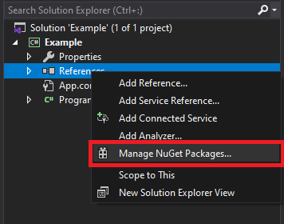
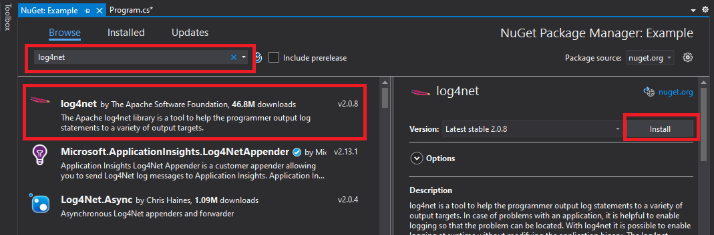
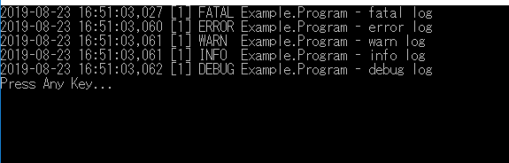
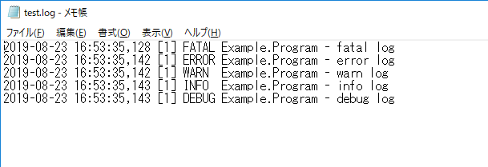
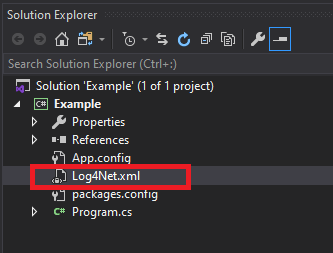
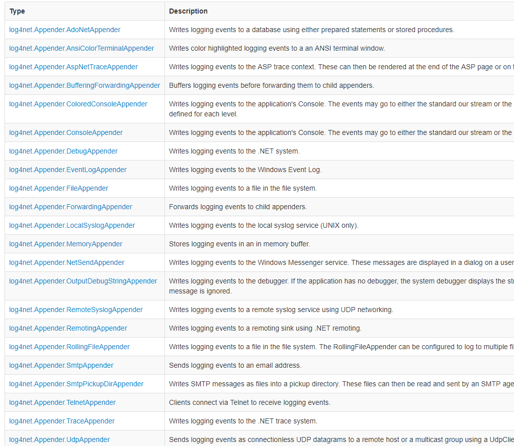

[C#] ログライブラリ(log4net)を設定する方法
こんにちは。明月です。
この投稿はC#のログライブラリ(log4net)を設定する方法に関する説明です。
プログラムを開発する時にVisual studioなどのIDEツールでデバッグ機能を通ってプログラムの流れを把握することができます。それで開発中でエラーが発生するか間違う結果が出る時にはデバッグ値を追跡してソースコードを修正することができます。
でも、開発が終わって本番(Production)にビルドしたものをサーバにデプロイして運用する時にもバグが発生する可能性があります。その時には別にエラーログを作成する機能がなければエラー原因と問題を把握することが大変になります。
そのため、出来る方法でログを残して(テキストファイルやデータベースにエラー内容を格納すること)プログラムの流れを記録します。問題が発生する時に、ログ内容を追跡してエラーを予測するか見つけることができます。
その以外にログを通ってユーザの行動パターンの分析、追跡、学習などの統計資料も必要です。
C#ではログを作成するライブラリは代表的に二つがあります。ElmahとLog4netがあります。Elmahも随分多いプロジェクトで使っていると思いますが、個人的にLog4Netをお勧めです。
理由はLog4Net、Log4j、Log4PHPなどで他のプログラム言語でも使っているライブラリなので、互換性がよいし、ライブラリのコミュニティも大きいので様々な情報や派生ライブラリを得やすいです。
それならLog4Netを使うためにはNugetを利用してLog4Netを連結します。


using System;
using log4net;
using log4net.Appender;
using log4net.Layout;
using log4net.Repository.Hierarchy;
namespace Example
{
class Program
{
// 実行関数
static void Main(string[] args)
{
// ログマネージャーを設定する。
var repository = LogManager.GetRepository();
// ログ設定を可否
repository.Configured = true;
// コンソールログパターンを設定
var consoleAppender = new ConsoleAppender();
// コンソールログモジュールの名設定(もし同じモジュールを二つ以上使う時に区分するために)
consoleAppender.Name = "Console";
// ログパターン
consoleAppender.Layout = new PatternLayout("%d [%t] %-5p %c - %m%n");
// ファイルログパターンを設定
var rollingAppender = new RollingFileAppender();
// ファイルログモジュール名設定
rollingAppender.Name = "RollingFile";
// システムが起動する時に既存ファイルで内容を続けて追加するか？新しく作成するか？
// trueなら追加する。
rollingAppender.AppendToFile = true;
// 新しいファイルで切り替える時に既存のログファイルにつけるファイル名パターン 例) test.log-2020-04-08
rollingAppender.DatePattern = "-yyyy-MM-dd";
// ログファイル設定
rollingAppender.File = @"d:\work\test.log";
// ファイルの単位は日付かサイズか？ - 今は日付単位で設定した。
rollingAppender.RollingStyle = RollingFileAppender.RollingMode.Date;
// ログパターン
rollingAppender.Layout = new PatternLayout("%d [%t] %-5p %c - %m%n");
// ログマネージャーをAppender登録が可能ようにHierarchyタイプにキャスターする。
var hierarchy = (Hierarchy)repository;
// Appenderを登録する。
hierarchy.Root.AddAppender(consoleAppender);
hierarchy.Root.AddAppender(rollingAppender);
// ファイルログを稼働
rollingAppender.ActivateOptions();
// ログ出力設定がAllならすべて出力する。その以外はログレベル別で出力する。最下レベルはFatalでFatal設定すればFatalログしか出力しないこと。
hierarchy.Root.Level = log4net.Core.Level.All;
// ログ設定
ILog logger = LogManager.GetLogger(typeof(Program));
// ログレベル単位で出力
logger.Debug("debug log");
logger.Info("info log");
logger.Warn("warn log");
logger.Error("error log");
logger.Fatal("fatal log");
// DebugとAllは同じだ。
// Warnを設定すればWarnとError、Fatalのログが出力する。
Console.WriteLine("Press Any Key...");
Console.ReadKey();
}
}
}


パターンレイアウトと領域を確認するとパターン式があることを確認できます。 パターンレイアウトに関しては詳しく説明したいですが、別に大事部分ではないし、パターンレイアウトの内容が多いので、Log4NetのAPIで直接に確認するほうがよいです。
参照 - https://logging.apache.org/log4j/1.2/apidocs/org/apache/log4j/PatternLayout.html
別にレイアウトに関して問題なければ、「%d [%t] %-5p %c - %m%n」の式はよいです。
ここまで設定すればログを使うことができます。
でも、実際に本番(Production)に使うと思えばログ設定がソースの中にあるので、設定ができないです。パラメータで設定ができますが、それはそれで設定が複雑になります。
using System;
using log4net;
using log4net.Config;
using System.IO;
namespace Example
{
class Program
{
static void Main(string[] args)
{
// ログ設定があるxmlのパス
var logPath = Path.Combine(AppDomain.CurrentDomain.BaseDirectory, "Log4Net.xml");
// Fileinfoタイプに宣言する。
var file = new FileInfo(logPath);
// LogManagerに設定する。
XmlConfigurator.Configure(file);
// ログ設定
ILog logger = LogManager.GetLogger(typeof(Program));
// ログレベル単位で出力
logger.Debug("debug log");
logger.Info("info log");
logger.Warn("warn log");
logger.Error("error log");
logger.Fatal("fatal log");
Console.WriteLine("Press Any Key...");
Console.ReadKey();
}
}
}
上の例を見ればログ設定をXMLファイルで作成して読み込んでXmlConfigurator.Configureに設定すれば使えます。
<?xml version="1.0" encoding="utf-8" ?>
<log4net>
<!-- コンソールログ設定 -->
<appender name="Console" type="log4net.Appender.ConsoleAppender">
<!-- ログパターン設定 -->
<layout type="log4net.Layout.PatternLayout">
<conversionPattern value="%d [%t] %-5p %c - %m%n" />
</layout>
</appender>
<!-- ファイルログ設定 -->
<appender name="RollingFile" type="log4net.Appender.RollingFileAppender">
<!-- ファイル名設定 -->
<file value="d:\work\test.log" />
<!-- ファイルの単位は日付かサイズか？ - 今は日付単位で設定した。 -->
<appendToFile value="true" />
<!-- 新しいファイルで切り替える時に既存のログファイルにつけるファイル名パターン 例) test.log-2020-04-08 -->
<datePattern value="-yyyy-MM-dd" />
<!-- ファイルの単位は日付かサイズか？ - 今は日付単位で設定した。 -->
<rollingStyle value="Date" />
<!-- ログパターン設定 -->
<layout type="log4net.Layout.PatternLayout">
<conversionPattern value="%d [%t] %-5p %c - %m%n" />
</layout>
</appender>
<!-- ログレベル設定 -->
<root>
<level value="ALL" />
<appender-ref ref="Console" />
<appender-ref ref="RollingFile" />
</root>
</log4net>

設定は上のソース同じ設定にしましたので、同じ結果が出ます。
私の場合はConsoleAppenderとRollingFileAppenderだけ使いました。でもLog4Netで提供するAppenderはすごく多いです。(もし、他のAppenderの説明が必要ならコメントを残してください。)
link - https://logging.apache.org/log4net/release/manual/introduction.html

上のリストを確認すれば、データベースAppender、メールAppender(エラーが発生するとメール送信)、メモリAppender、SocketAppenderなどが多いです。必要なものがあればソースまたはXMLに追加して使ったらよいです。
link - https://logging.apache.org/log4net/release/manual/configuration.html
ここまでC#のログライブラリ(log4net)を設定する方法に関する説明でした。
ご不明なところや間違いところがあればコメントしてください。
- [C#] EMailを送信する方法(System.Net.Mail)2020/04/22 19:00:42
- [C#] ini環境ファイルを使う方法2020/04/22 00:09:39
- [C#] 環境設定ファイルを扱う方法(System.Configuration)2020/04/20 19:37:57
- [C#] Reflectionを利用してクラス複製する方法2020/04/17 00:34:33
- [C#] XMLをXPathを利用してデータを取得する方法2020/04/16 00:47:17
- [C#] NSoupライブラリを利用してXMLとHTMLをパーシングする方法2020/04/14 19:34:15
- [C#] 日付フォーマット2020/04/09 20:53:20
- [C#] ログライブラリ(log4net)を設定する方法2020/04/08 13:04:22
- [C#] Zipの圧縮ファイルを解凍するコードを作成する方法2020/04/07 11:17:44
- [C#] Zip圧縮コードを作成する方法2020/04/06 14:56:13
- [C#] 数字フォーマット(お金表示及び小数点以下表示)2020/04/03 00:38:37
- [C#] コマンド(cmd)を実行する方法(Processクラス)2020/03/31 07:15:40
- [C#] FTPに接続してファイルダウンロード、アップロードする方法2020/03/27 19:20:14
- [C#] HttpWebRequestを利用してウェブページを読み込みする方法2020/03/27 00:23:19
- [C#] Base64のエンコード、デコードする方法2020/03/26 02:19:50
- [C#] 47. Nugetを使い方(外部ライブラリ)とデータベース(MariaDB(Mysql))を使い方、そしてトランザクション(Transaction)2021/10/08 18:58:57
- [Window] MariaDBをインストールする方法2021/10/08 18:56:05
- [C#] 46. データベース(MSSQL)に接続する方法2021/10/07 18:39:58
- [C#] 45. ネットワークソケット通信(Socket)を使い方2021/10/06 19:06:25
- [C#] 44. ファイル(FileInfo)とディレクトリ(DirectoryInfo)を扱い2021/10/05 19:29:34
- [C#] 43. ストリーム(Stream)とバイナリ(byte[])、エンコード(Encoding)、そしてusingを使い方とIDisposableインターフェース2021/10/04 18:33:04
- [C#] 42. ファイルを扱い(IO)とファイルメタデータ(FileInfo)を使い方2021/10/01 20:10:21
- [C#] 41. Taskクラスとasync、awaitを使い方2021/10/01 18:59:14
- [Javascript ] WebのFull calendar(スケジュールカレンダー)の使い方法2021/07/15 21:35:36
- [Java] 56. Web serviceのサーブレット(Servlet)で初期化作業(properties設定)2021/07/02 17:10:36
- [Java] 55. Spring frameworkに文字化けを解決する方法(Encoding設定)2021/06/30 16:37:16
- [Java] 54. Spring frameworkでWeb filterを使う方法2021/06/29 18:25:12
- [Java] 53. ウェブサービス(Web service)でエラーページを処理する方法2021/06/25 13:35:54
- [Design pattern] 1-3. ファクトリメソッドパターン(Factory method pattern)2021/06/23 19:45:37
- [Java] WebSocketでチャット履歴をローディングする方法2021/06/15 18:34:45